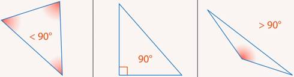
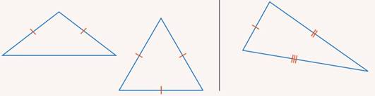

Треугольники тоже можно классифицировать по различным признакам. Основные элементы треугольника– углы и стороны.
По углам можно выделить три вида треугольников (см. рис. 1):

Рис. 1. Треугольники (слева направо): остроугольный, прямоугольный, тупоугольный.
Классификация треугольников – по наличию равных сторон (см. рис. 2).

Рис. 2. Треугольники (слева направо): равнобедренный, равносторонний, разносторонний